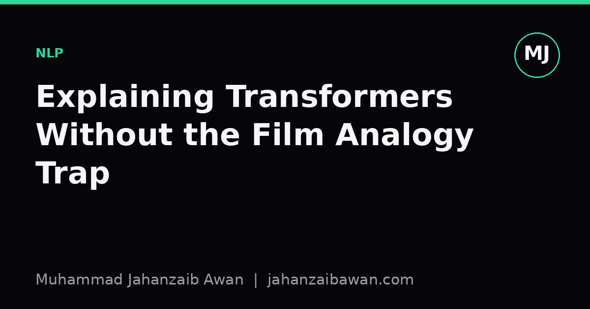

Explaining Transformers Without the Film Analogy Trap
Most lay explanations of transformers reach for a story about actors or search parties. Here is a way to build real intuition using attention as a weighted vote, not a metaphor.

Why the usual explanations fall apart
Whenever someone tries to explain transformers to a non-technical audience, they tend to reach for a story. A group of detectives comparing notes. A film crew where every actor pays attention to every other actor on set. A classroom where students glance around before answering. These analogies feel warm and approachable, and that is exactly the problem. They give the listener a comforting picture without giving them anything that actually behaves like the mechanism. Ask a follow-up question, such as why the model sometimes gets the wrong answer, or why longer sentences are harder, and the analogy has nothing left to offer. It was decoration, not explanation.
I think the failure mode is specific: film analogies describe attention as vague mutual awareness. Everyone looks at everyone, in some fuzzy social sense. But the actual mechanism is a numerical weighting process, and the numbers are the whole point. If you strip out the numbers to make the story simpler, you have removed the one thing that explains the model's behaviour. A good non-technical explanation should be simplified in scope, not falsified in substance. That distinction is the difference between an explanation that helps someone reason about a new example, and one that just makes them nod politely.
The alternative I use is to explain attention as a weighted vote among words, worked through with a small, concrete sentence, using rough numbers a listener can actually sit with. It takes slightly longer to set up than a metaphor, but it survives scrutiny, and people leave with something they can apply to a sentence you have not shown them yet.
A weighted vote, worked through with real numbers
Take the sentence: 'The trophy did not fit in the suitcase because it was too big.' A person reads this instantly and knows 'it' refers to the trophy. A transformer has to work this out too, and it does so, roughly, by asking: for the word 'it', how much should each other word in the sentence contribute to understanding what 'it' means here?
Imagine the model assigns rough contribution scores, out of 100, when processing the word 'it': trophy gets 55, suitcase gets 30, big gets 8, and the remaining words share the last 7 between them. These numbers are not looked up in a dictionary. They come from the model comparing 'it' against every other word and producing a compatibility score, then converting those scores into a set of weights that sum to one. The word 'trophy' wins the vote, so the model's internal representation of 'it' becomes mostly a blend of 'it' and 'trophy', with a smaller contribution from 'suitcase' and a trace from everything else.
Now change one word: 'The trophy did not fit in the suitcase because it was too small.' The sentence looks almost identical, but 'small' pulls the vote a different way, and now suitcase might score 52 against trophy's 33. This is the part that a film analogy simply cannot carry: the same word, 'it', ends up pointing at a different noun purely because one adjective changed, and the mechanism for that shift is a re-weighted vote, not a change in who is 'paying attention' in some general sense. Every word in a transformer does this for every other word, producing a dense grid of weighted contributions that gets recalculated at every layer of the network.
This is also where the value of the explanation becomes practical rather than decorative. Once someone understands that meaning is being assembled from weighted contributions of surrounding words, they can predict, correctly, that a model will struggle when the deciding word is very far away in a long document, because the vote has more competitors and the true signal gets diluted among many plausible but wrong contributors. That is a real, testable consequence of the mechanism, and no metaphor about actors or search parties gets you there.

Why the mechanistic version earns its extra minute
People often worry that mentioning weights and scores will lose a non-technical audience, but in my experience the opposite happens. Vague analogies invite vague follow-up questions that go nowhere. Concrete numbers invite concrete follow-up questions that you can actually answer. If someone asks why a chatbot occasionally attributes a pronoun to the wrong noun, you can say the vote was close, the wrong word scored 48 against the right word's 45, and small differences in wording can flip that balance. That is a genuine, falsifiable claim about the system's behaviour, not a restatement of the metaphor in different words.
There is also a professional reason to care about this, beyond good manners in a conversation. Non-technical stakeholders, including managers, clients, and journalists, make decisions based on the mental model you hand them. If you give them a story about attention as generalised awareness, they will draw wrong conclusions about what the system can and cannot do, and those wrong conclusions tend to surface later as unrealistic expectations or misplaced trust. A slightly harder but accurate explanation, delivered patiently, produces better-calibrated expectations, and calibrated expectations are worth far more than a smooth first impression.
None of this requires equations or code. It requires one worked sentence, a small table of rough weights, and the honesty to say that the model recalculates these weights at every layer, refining its guess about what each word means in context. That is a story with moving parts a listener can turn over on their own, which is the actual test of whether an explanation worked.
A practical takeaway
If you need to explain transformers to someone without a technical background, resist the pull toward a tidy analogy. Pick one short sentence with genuine ambiguity, walk through rough attention scores by hand, and show how changing a single word changes the winner. It costs an extra couple of minutes compared with a metaphor, but it leaves people with a mechanism they can reason about rather than a story they can only repeat. That difference matters whenever the explanation has to survive a follow-up question, and it almost always does.